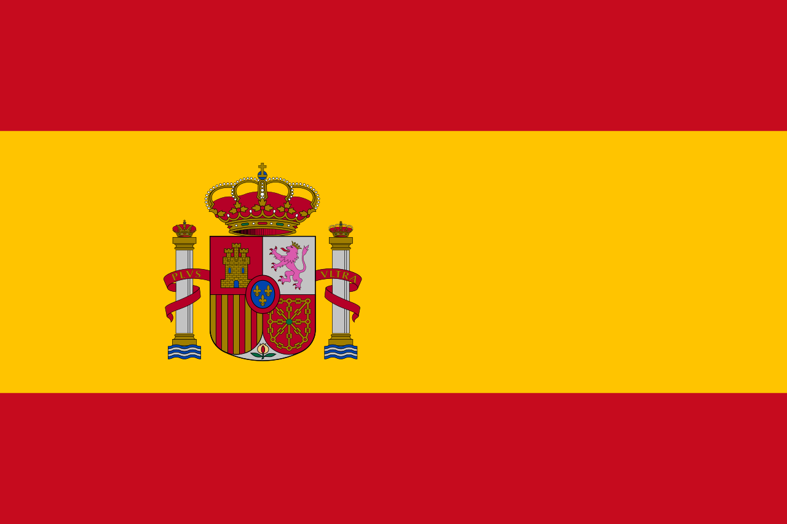
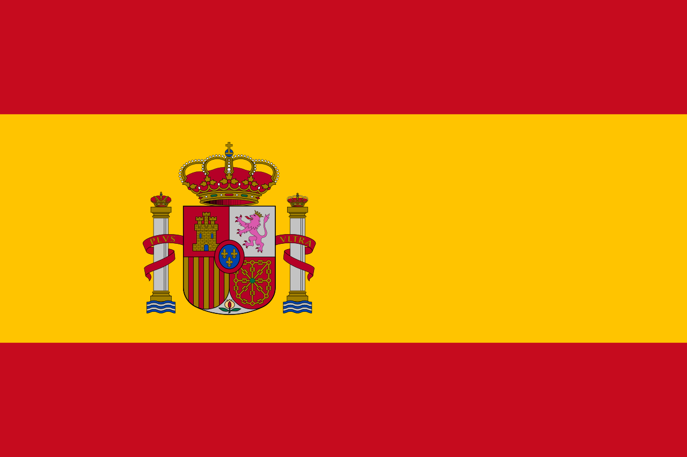

LaLiga Future Stars (20/21)
 Ander Barrenetxea (19 Real Sociedad Winger)
Ander Barrenetxea (19 Real Sociedad Winger)
Barrenetxea has played 33 of 38 matches in LaLiga scoring 3 goals. The 19 year old has signed a new contract with Real Sociedad until 2027 comminting his talant to a side at which he has played since 2013 as a youth player. He has yet to have a senior team call up from Ppain but has already made his under-19 debut for Spain. He shows real promise to develop into a threat on the wing.
Ansu Fati (18 Barcalona Winger/Striker)
Ansu Fati has played 7 of 38 matches in LaLiga scoring 4 goals. He recived a knee injury at the start of the season but from the small sample size revived from the past two season, he has real talant. It is well known that Lional Messi (who is considered to be one of best of all time in the world of football,) is mentoring Ansu Fati. He has achived many records when he was only 17 such as the youngest El Clasico scorer in history and tieing the LaLiga record for the most goals scored by a player under 18 years old. He will have a bright future if he can stay away from injurys.
Pedro Gonzalez lopez (18 Barcalona Midfielder)
Pedro Gonzalez lopez otherwise known as Pedri, has played 37 of 38 matches in LaLiga scoring and assisting 3. Pedri is often subbed on unless he is starting in which he is usually subbed off. Pedri made his Spain senior team debut during the 2022 World Cup qualifications. He is set to play in the 2020 Euros for Spain. Lional Messi has been impressed with Pedri and his ability with the ball. Pedri is known for his passing and is compared to Iniesta. No wonder Messi likes playing with Pedri.
 Sergino Dest (20 Barcalona Fullback)
Sergino Dest (20 Barcalona Fullback)
Sergino Dest has played 30 of 38 games in LaLiga Scoring 2 goals and assisting 1. Dest averages 1 tackle, 0.3 interceptions, 0.6 clearences, and 0.5 dribbles per 90 minutes. Dest was called up to the senior USMNT in 2019. "Sergino Dest is a full-back for teams like Barcelona. He's one of those full-backs who is fast and comfortable with the ball. He has a great future on any team" - Ronald Koeman (Baralona General Manager)